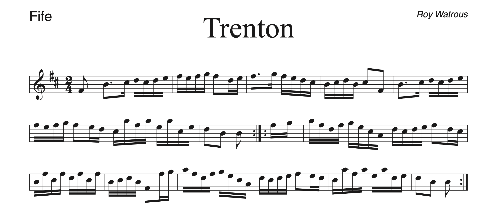
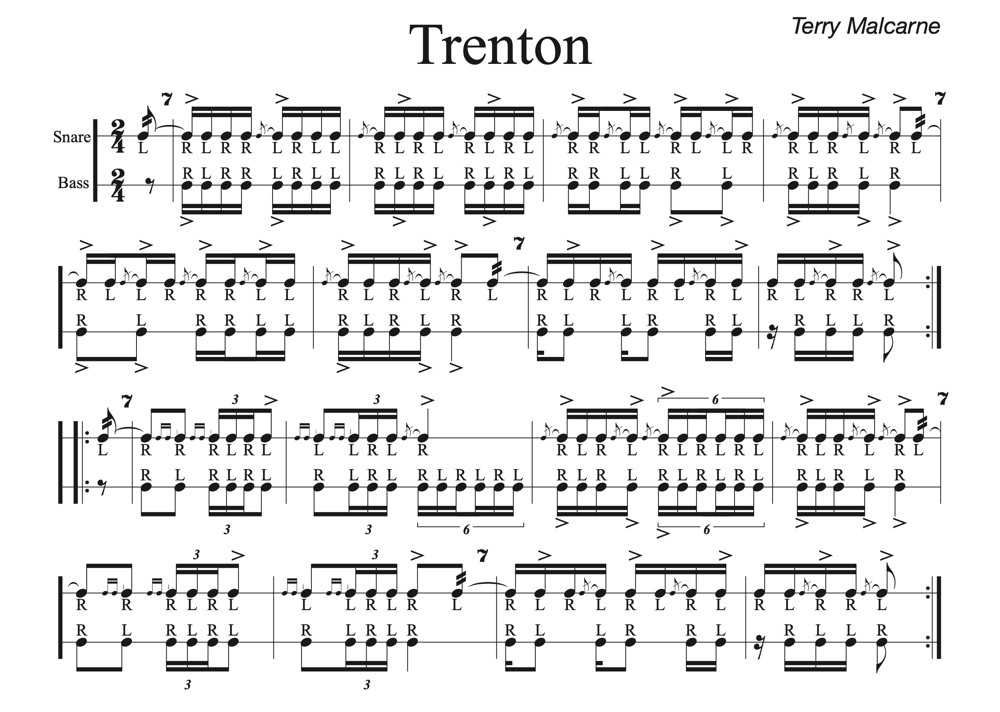

Note for drummers: I found multiple versions for a couple of the drum parts. I put them all in, since you would know which version you play / which version is the best much better than I would.


This tune was in Culloden Moor, so many/most WDJ members may be familiar with it.


This song has a beautiful (in my opinion) 3-4 part harmony, which I put below.


Is there a bass drum part to this piece? I'd presume so, but I could not find it."


This song is very challenging on the fife (but a lot of fun in my opinion). Newer fifers would not be able to play this song, but if needed, I can try to cook up a harmony that is more accessible to our newer members.


This song would be pretty tough for the fife, especially for our newer fifers (not impossible though, I think). Also, this recording is not how the tune is usually played, especially for the C part. Trust the sheet music, not the recording.


Sorry about the bad recording
 This recording is not exactly how I would recommend we play it (though it's still pretty close). The rhythm is usually a little different.


This is technically two separate songs, but they are just about always played together as a medley.


This song would be rather challenging for the newer fifers, but it's a lot of fun in my opinion.


MCV plays an amazing arrangement of Eel Pot Tavern. Unfortunately, since it's MCV, this arrangement is in some crazy key of H# or whatever. I put a transposed recording of their arrangement below. If we vote for it, I could, with a little effort, procure a copy of their sheet music. The sheet music below is a different arrangement, but the fife melody line is almost the same.


This song would be a little tough on the newer fifers (not impossible, I think).


This tune would also be tough on the newer fifers, but it can be made more accessible by omitting pedal tones. Also there is a harmony I can dig up that sounds good and is not as challenging.


This song would be a little tough on the newer fifers. Also, sorry about the terrible quality of the recording.


This song is very challenging for the fife (but a lot of fun in my opinion). Newer fifers would not be able to play this song, but if needed, I might be able to cook up a harmony that is more accessible to our newer members.